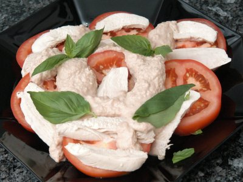

| Zutaten für 4 Personen: | |
| 3 dl | Hühnerbouillon |
| 4 | Pouletbrüstli je ca. 150 g |
| 1 Dose 200g | Thunfisch im Salzwasser |
| 3 El | Mayonnaise |
| 300 g | Tomaten |
| Basilikumblättchen | |
Vor- und zubereiten: ca. 30 Minuten
Bouillon in einer kleinen Pfanne aufkochen. Pouletbrüstchen beigeben; sie müssen knapp mit Bouillon bedeckt sein, zugedeckt bei kleiner Hitze ca. 10 Minuten ziehen lassen, dabei einmal wenden. Pfanne von der Platte nehmen, Pouletbrüstli in der Bouillon auskühlen. 5 Esslöffel Bouillon für die Sauce beiseite stellen.
Thon mit Mayonnaise und Bouillon fein pürieren, Sauce würzen.
Pouletbrüstli in ca. 3 mm dicke Tranchen schneiden, Tomatenscheiben würzen. Beides auf einer Platte anrichten, Sauce darüber giessen, mit Basilikum garnieren.
Pro Person: 15 g Fett, 47 g Eiweiss, 3 g Kohlenhydrate, 1380 kJ, 330 kcal
Betty Bossi Zeitung 2005
Einfach zuzubereiten. Mir ist nicht ganz klar wie man die Pouletbrüstchen schneiden muss, damit sie schön angerichtet werden können. Schmeckt gut. RE 7.1.2006
@LINKBACK_TAG@ @WAKELOCK@